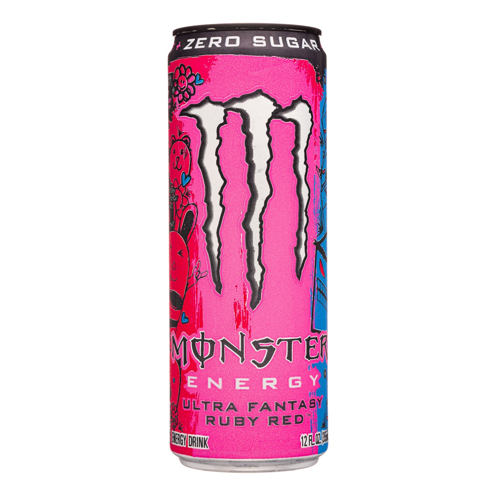

Mies am Arsch gewesen den ganzen Tag, da haben auch Club Mate und Monster nicht geholfen.
Allerdings hatte ich heute ne neue Monster Sorte,
Bild ist unten irgendwo.

War echt okay, hatte wie Mitch sagte tatsächlich Ähnlichkeiten zum Weißen.
'Nen bisschen saurer vielleicht.
Ironischerweise war der zwar genau so wie die anderen Sorten im Angebot, aber trotzdem 40ct teurer als alle Anderen.
Muss nen Import straight aus Japan sein oder so /j
Leck Eier on god